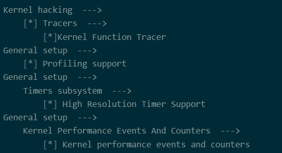
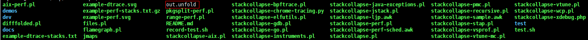

调试工具使用指南
前言
本文档为使用linux perf工具进行性能分析的使用指导。
本文档（本指南）主要适用于以下工程师：
- 技术支持工程师
- 软件开发工程师
与本文档相对应的产品版本如下。
说明：
本文以Hi3516CV610描述为例，未有特殊说明，其他芯片与Hi3516CV610内容一致。
在本文中可能出现下列标志，它们所代表的含义如下。


perf介绍
概述
perf是linux下的一款性能分析工具，能够进行函数级与指令级的热点查找。它由一个叫“performance counters”的内核子系统实现，基于事件采样原理，以性能事件为基础，支持针对处理器相关性能指标与操作系统相关性能指标的性能剖析，可用于性能瓶颈的查找与热点代码的定位。
perf不但可以分析特定应用程序的性能问题，还可以分析内核的性能问题，当然也可以同时分析应用程序和内核，从而全面理解应用程序中的性能瓶颈。
综合来看，perf工具有以下优势：
- perf是linux kernel自带的系统性能优化工具，与linux kernel的紧密结合；
- 工具能够对应用、内核、整个系统进行性能分析，查找性能瓶颈，发现性能问题的原因及热点代码；
- 是一款综合性能分析工具，大到系统全局性能，小到进程、线程，甚至函数、汇编级别。
更多perf的信息参考：https://perf.wiki.kernel.org/index.php/Tutorial
perf依赖
zlib
zlib是一个广泛使用的压缩库，它提供了一种高效的压缩和解压缩数据的方法。
elfutils
elfutils是一个用于操作ELF（Executable and Linkable Format）二进制文件的开源工具集，包括查找和处理GNU Linux上进程和核心文件的DWARF调试数据、符号、线程状态和堆栈跟踪。
binutils
binutils是一组用于创建、操作和转换二进制文件的工具集。它包括了一些常用的工具，如汇编器、链接器、反汇编器、目标文件复制器等等。
perf编译
本文档以Hi3516CV610芯片为例。
perf依赖库
因直接在Linux内核tool/perf路径下编译出的perf会缺少依赖库，进而导致perf在使用时，无法解析得到函数名，只能得到地址；通过预先编译好perf的依赖库，然后在perf编译时设置好所编译好的依赖库的路径，即可解决该问题。
perf依赖源码下载
-
下载zlib-1.2.13.tar.gz
-
下载elfutils-0.188.tar.bz2
链接：https://sourceware.org/elfutils/ftp/0.188/elfutils-0.188.tar.bz2
-
下载binutils-2.38.tar.gz
编译perf musl版本
编译环境准备
- 将perf依赖源码下载的perf依赖源码，放在步骤2中新建perf目录结构下
-
创建目录结构如下：
-
创建FEATURE-DUMP文件
由于交叉编译环境下 feature detection 无法正常工作，需提供预生成的 FEATURE-DUMP
文件声明可用的系统特性：
feature-backtrace := 0 feature-dwarf := 0 feature-dwarf_getlocations := 0 feature-eventfd := 1 feature-fortify-source := 1 feature-sync-compare-and-swap := 1 feature-get_current_dir_name := 1 feature-gettid := 1 feature-glibc := 0 feature-libbfd := 0 feature-libbfd-buildid := 0 feature-libcap := 0 feature-libelf := 0 feature-libelf-getphdrnum := 0 feature-libelf-gelf_getnote := 0 feature-libelf-getshdrstrndx := 0 feature-libnuma := 0 feature-numa_num_possible_cpus := 0 feature-libperl := 0 feature-libpython := 0 feature-libslang := 0 feature-libslang-include-subdir := 0 feature-libcrypto := 0 feature-libunwind := 0 feature-pthread-attr-setaffinity-np := 0 feature-pthread-barrier := 1 feature-reallocarray := 1 feature-stackprotector-all := 1 feature-timerfd := 1 feature-libdw-dwarf-unwind := 0 feature-zlib := 0 feature-lzma := 0 feature-get_cpuid := 0 feature-bpf := 0 feature-sched_getcpu := 1 feature-sdt := 0 feature-setns := 1 feature-libaio := 1 feature-libzstd := 0 feature-disassembler-four-args := 0 feature-file-handle := 1 -
新建一个build_musl_perf.sh放到perf_tool_openeuler/build目录下，将下面的“脚本内容”拷贝到build_musl_perf.sh脚本中。
#!/bin/bash # user modify compile parameter # cross compiler CROSS_PERF=arm-openeuler-linux-musleabi # linux-5.10 kernel root directory KERNEL_DIR=xxx/open_source/linux/linux-5.10.y # pre-built dependency libraries directory DEPS_DIR=xxx/open_source/linux/perf # color define YELLOW="\e[33;1m" GREEN="\e[32;1m" DONE="\033[0m" # compile variable set -e test -d $KERNEL_DIR || { echo -e "$YELLOW invalid kernel dir $DONE"; exit 1; } CUR_DIR=`pwd` BUILD_DIR=${CUR_DIR} OUPUT_DIR=${BUILD_DIR}/output PERF_DIR=${KERNEL_DIR}/tools/perf FEATURES_DUMP=/tmp/perf_tool_openeuler_openeuler/FEATURE-DUMP function build_perf(){ cd ${PERF_DIR} make ARCH=arm CROSS_COMPILE=${CROSS_PERF}- clean sed -i "s/CORE_CFLAGS += -Wall/CORE_CFLAGS += -w/g" Makefile.config # 第一步：动态编译，确定配置（NO_LIBELF=1 简化配置） make ARCH=arm CROSS_COMPILE=${CROSS_PERF}- WERROR=0 \ FEATURES_DUMP=${FEATURES_DUMP} \ NO_LIBELF=1 \ V=1 perf # 第二步：静态编译，生成独立可执行文件 LDFLAGS=-static make ARCH=arm CROSS_COMPILE=${CROSS_PERF}- WERROR=0 \ FEATURES_DUMP=${FEATURES_DUMP} \ NO_LIBELF=1 \ V=1 perf } function generate_install(){ rm -rf ${OUPUT_DIR} mkdir -p ${OUPUT_DIR}/bin/ cp -f ${PERF_DIR}/perf ${OUPUT_DIR}/bin tree ${OUPUT_DIR} } if [ ! -n "$1" ] || [ "$1" == "-h" ] || [ "$#" -gt "1" ]; then echo -e "${YELLOW} infor: ./build_musl_perf.sh all :build perf for linux-5.10.221${DONE}"; echo -e "${YELLOW} infor: ./build_musl_perf.sh clean :build clean${DONE}"; echo -e "${YELLOW} infor: ./build_musl_perf.sh distclean :build distclean${DONE}"; exit 0 fi if [ "$1" == "clean" ]; then rm -rf ${OUPUT_DIR} cd ${PERF_DIR} make ARCH=arm CROSS_COMPILE=${CROSS_PERF}- clean; fi if [ "$1" == "distclean" ]; then rm -rf ${OUPUT_DIR} cd ${PERF_DIR} make ARCH=arm CROSS_COMPILE=${CROSS_PERF}- clean; fi if [ "$1" == "all" ]; then build_perf; generate_install; fi -
进入perf_tool_openeuler/build/的目录：修改脚本build_musl_perf.sh中四个参数为当前环境对应值
CROSS_PERF=arm-openeuler-linux-musleabi
KERNEL_DIR=xxx/open_source/linux/linux-5.10.y
DEPS_DIR=xxx/open_source/linux/perf
源码编译
-
给脚本添加执行权限
chmod +x build_musl_perf.sh
-
查看帮助
./build_musl_perf.sh -h
-
清理（建议每次编译前执行）
./build_musl_perf.sh clean
-
一键编译
./build_musl_perf.sh all
-
执行整体编译后，会在perf_tool_openeuler/output/bin下生成perf工具
打开perf配置选项，重编linux内核
使用perf工具时需要打开linux内核相关的perf配置选项。其步骤如下：
-
进入linux-5.10内核源码目录后，执行：
make ARCH=arm CROSS_COMPILE=arm-openeuler-linux-musleabi menuconfig
注：当使用gnu工具链时，需将musl替换成gnu。
-
开启以下四个内核配置选项

-
参考SDK版本包中boards/dmeb/readme_cn.txt 内核编译步骤进行编译；
-
生成的内核镜像即为支持perf的linux内核镜像，烧写到单板，然后配合perf依赖库章节编译的perf工具及其依赖库，即可使用。
注：内核配置进行更改后，若业务代码存在ko，则需要根据打开了perf配置的内核对其进行重编ko。
perf使用说明
perf使用准备
-
将打开perf配置选项，重编linux内核编译生成的内核镜像烧写到单板。参考SDK版本包镜像烧写方式。
注：由于开了perf后，内核镜像会变大，uboot可能无法正常启动内核，因此，需要根据当前大小情况修改uboot的bootargs和bootcmd，以确保内核能正常起来。
-
重启单板，mount当前perf_tool_openeuler/output/bin文件夹所在服务器。
-
mount完成后，将perf_tool_openeuler/output/bin导出到单板的PATH，lib导出到单板的LD_LIBRARY_PATH环境变量中，即可执行perf命令，参考perf使用方式章节。
export PATH="xxx/bin:$PATH"
说明：
- 替换xxx路径，为当前实际路径
- xxx/bin目录下的可执行文件，需要添加执行权限：chmod +x -R xxx/bin/*
perf使用方式
常用命令
-
perf top
实时显示系统/进程的性能统计信息
-
perf list
查看支持的性能事件
-
perf --help
查看帮助
生成火焰图
-
采集数据：
perf record -a -F 99 -g sleep 20
参数解释：
- -a：采集所有cpu信息
- -F 99 ：1秒钟进行采集99次
- -g：收集调用栈
- sleep 20:采集时间为20秒
-
解析数据：
perf script -i perf.data > out.unfold
-
服务器下载FlameGraph：
-
将out.unfold拷贝到服务器下载的FlameGraph目录下

-
在服务器上执行折叠符号：
./stackcollapse-perf.pl out.unfold | ./flamegraph.pl > out.svg
采集热点汇编指令
-
采集数据：
perf record –e cache-misses -t tid
参数解释：
-e cache-misses：指定cache-misses事件
-t tid：指定采集线程的tid
-
得到函数热点：
perf report > out_fun.txt
-
得到汇编指令热点：
perf annotate xxxFunc > out_annotate.txt
注：
- xxxFunc：需要分析的函数符号
-
汇编指令无对应C语言函数符号时，可以通过以下方式解决：
- 编译选项加-g
-
使用相应工具链的objdump，查看相应.o文件的函数汇编对应关系，如：
arm-openeuler-linux-musleabi-objdump -d -l xxx/xxx.o > test1
注：当使用musl工具链时，需将gnu替换成musl。
注意事项
- 编译perf相关依赖时，需要保证编译环境能编过linux-5.10内核；
- 本文档仅支持linux-5.10内核版本。